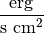

Units can be created from strings using the Unit class:
>>> from astropy import units as u
>>> u.Unit("m")
Unit("m")
>>> u.Unit("erg / (s cm2)")
Unit("erg / (s cm2)")
Note
Creating units from strings requires the use of a specialized parser for the unit language, which results in a performance penalty if units are created using strings. Thus, it is much faster to use unit objects directly (e.g., unit = u.degree / u.minute) instead of via string parsing (unit = u.Unit('deg/min')).
Units can be converted to strings using the to_string method:
>>> fluxunit = u.erg / (u.cm ** 2 * u.s)
>>> fluxunit.to_string()
u'erg / (cm2 s)'
By default, the string format used is referred to as the “generic” format, which is based on syntax of the FITS standard’s format for representing units, but supports all of the units defined within the astropy.units framework, including user-defined units. The Unit and to_string functions also take an optional format parameter to select a different format.
astropy.units includes support for parsing and writing the following formats:
- "fits": This is the format defined in the Units section of the FITS Standard. Unlike the “generic” string format, this will only accept or generate units defined in the FITS standard.
- "vounit": The proposed IVOA standard for representing units in the VO. Again, based on the FITS syntax, but the collection of supported units is different.
- "cds": Standards for astronomical catalogues from Centre de Données astronomiques de Strasbourg: This is the standard used, for example, by VOTable versions 1.2 and earlier.
astropy.units is also able to write, but not read, units in the following formats:
"latex": Writes units out using LaTeX math syntax using the IAU Style Manual recommendations for unit presentation. This format is automatically used when printing a unit in the IPython notebook:
>>> fluxunit
"console": Writes a multi-line representation of the unit useful for display in a text console:
>>> print fluxunit.to_string('console') erg ------ s cm^2"unicode": Same as "console", except uses Unicode characters:
>>> print u.Ry.decompose().to_string('unicode') m² kg 2.18×10-¹⁸ ───── s²
Since many files in found in the wild have unit strings that do not correspond to any given standard, astropy.units also has a consistent way to store and pass around unit strings that did not parse.
Normally, passing an unrecognized unit string raises an exception:
>>> u.Unit("m/s/s") # The FITS standard only allows one '/'
ValueError: Expected end of text (at char 3) in 'm/s/s'
However, the Unit constructor has the keyword argument parse_strict that can take one of three values to control this behavior:
- 'raise': (default) raise a ValueError exception.
- 'warn': emit a Warning, and return an UnrecognizedUnit instance.
- 'silent': return an UnrecognizedUnit instance.
So, for example, one can do:
>>> x = u.Unit("m/s/s", parse_strict="warn")
WARNING: UnitsWarning: 'm/s/s' did not parse using format 'generic'.
Expected end of text (at char 3) in 'm/s/s' [astropy.units.core]
This UnrecognizedUnit object remembers the original string it was created with, so it can be written back out, but any meaningful operations on it, such as converting to another unit or composing with other units, will fail.
>>> x.to_string()
'm/s/s'
>>> x.to(u.km / u.s / u.s)
ValueError: The unit 'm/s/s' is unrecognized. It can not be converted to
other units.
>>> x / u.m
ValueError: The unit 'm/s/s' is unrecognized, so all arithmetic operations
with it are invalid.